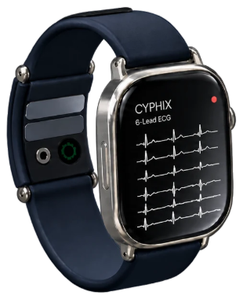
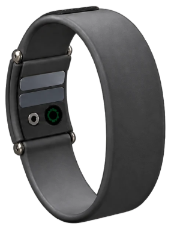
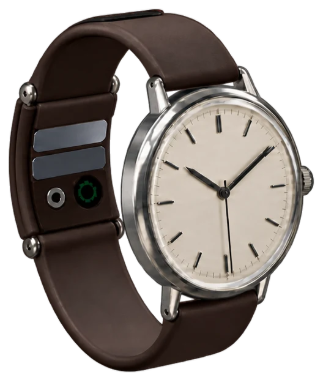
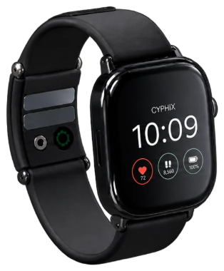

Now raising our seed round Request the deck
In development · Not for sale
Clinical Depth. Wearable Ease.
A 6-lead ECG module on the strap of the watch you already wear. It records when symptoms occur and sends the recording directly to the clinician.


Deaths a year from cardiovascular disease (WHO)
Global mobile ECG market
Home healthcare segment
The need for an ECG doesn't stop at the clinic door.
Symptoms are often transient: by the time a patient reaches care, the ECG may be normal. The need comes after discharge, between appointments and at the moment a symptom appears.
Today's options ask for a compromise
-
Clinical depth
Holter monitors, 12-lead devices
Clinical quality, but adhesive electrodes, wires and a professional setup.
-
Monitoring over time
Patches
The rhythm over days, without reliable ST-segment morphology.
-
Comfort
Smartwatches
One lead, mainly for atrial fibrillation; six-lead devices are carried separately.




Our solution
A module on the strap of the watch the patient already wears. When symptoms occur it records a 6-lead ECG (I, II, III, aVR, aVL, aVF) and sends it directly to the clinician, without patches, wires or professional setup. On a smartwatch, as a bracelet, on an analog watch, or as the Cyphix watch.
Noise, solved in hardware.
Each contact point is an array of elements, each with its own ADC, weighted in real time by the quality of its actual contact. An element losing its contact counts for less, and the lead keeps its detail.
Multi-element array. Patent filed in Israel.
Business model
-
Who pays
Health systems: health funds and public clinics.
-
For what
A follow-up programme: the device stays with the patient.
-
How
A fixed monthly fee for every active patient.
The team
-

Elio El Hassrouny
Founder & CEO
ex-Samsung R&D -

Dr. Tamir Wolf, MD
External Clinical Advisor
Where we are.
What comes next.
Working prototype
-
Technological and algorithmic proof of feasibility
-
Patent pending on the core technology
-
Israel Innovation Authority · Tnufa programme
-
A wearable product, ready for a trial
-
A clinical feasibility trial, 20 to 50 patients
-
Regulatory validation and an FDA submission